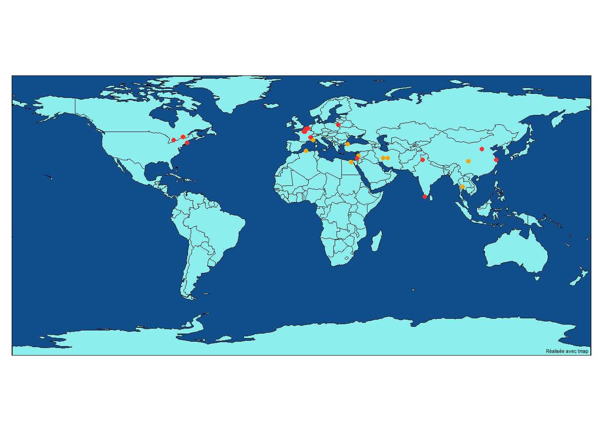
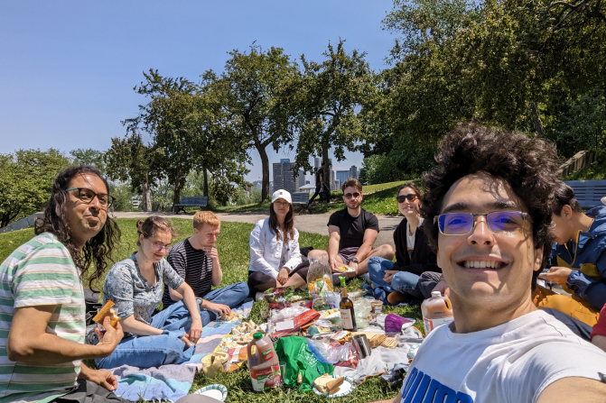
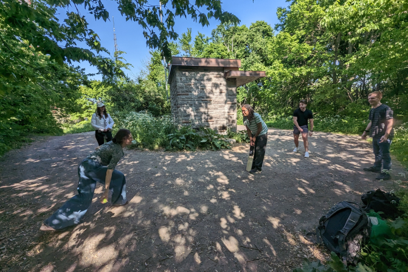
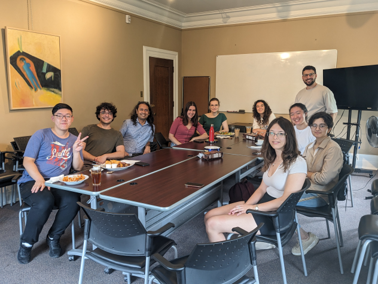

Current Lab Members
Marty’s image is from the McGill Tribune.


Collaborators


Suresh Krishna
Associate Professor, Department of Physiology, McGill.
MBBS (Med School), AIIMS, New Delhi; PhD, NYU, New York.
Spent time at Columbia University, CNRS (Lyon), German Primate Center (Goettingen), MPI for Human Development (Berlin), before coming to McGill (Jan 2020).
Katarzyna (Kasia) Jurewicz
- Post-doctoral fellow, Department of Physiology, McGill.
- MSc in Psychology, University of Warsaw; PhD in Neurobiology, Nencki Institute of Experimental Biology, Polish Academy of Sciences, Warsaw.
- Previously, I was a post-doc in Dr. Becket Ebitz’ lab (Noise lab) at Université de Montréal. Earlier, I conducted research in Dr. Ewa Kublik’s Cortico-Thalamic Group at the Nencki Institute of Experimental Biology. My PhD work was supervised by Prof. Andrzej Wróbel in the Laboratory of the Visual System at Nencki.
- ; Google Scholar
Jerome Carriot
- Research Associate, Department of Physiology, McGill.
- PhD, Joseph Fourier University, Grenoble, France.
- For the past two decades, I have been working on the vestibular system. I have held positions as a postdoctoral researcher and research associate at several institutions, including Brandeis University in Boston, the University of Western Ontario in London, and McGill University. My specialization lies in neural encoding of self-motion within the vestibular pathway.
- ; Google Scholar; ResearchGate
Yohaï-Eliel Berreby
- M.Sc. student, Department of Physiology, McGill
- Diplôme d’Ingénieur (combined B.Sc. and M.Sc. in Engineering), Télécom Paris, Palaiseau, France
- MPSI/MP CPGE (Math/Physics Classes Préparatoires aux Grandes Écoles), Lycée Hoche, Versailles, France
- , GitHub, LinkedIn
Amanda Pruss
- M.Sc. Student, Integrated Program in Neuroscience, McGill.
- B.A. in Psychology, McGill.
- I am also very interested in applying my knowledge in neuroscience in a clinical setting as well, in an effort to help people with conditions related to vision, attention, or epilepsy.
- , GitHub, LinkedIn
Oren Gurevitch
- M.Sc. Student, Department of Physiology, McGill.
- B.Sc. in Neuroscience, Bar-Ilan University, Ramat Gan, Israel.
- Previously, I was a research assistant working on sensory processing using rats, at Bar-Ilan University under Professor Adam Zaidel. Before that, as a lab assistant at the Weizmann Institute of Science, I worked on Multiple Sclerosis research with Professor Idit Shachar.
- , GitHub, LinkedIn
Buxin Liao

- M.Sc. Student, Integrated Program in Neuroscience, McGill.
- M.Eng. Student, Biomedical Engineering, University of Electronic Science and Technology of China, Chengdu, China.
- B.Eng. in Biomedical Engineering, Southeast University, Nanjing, China.
- , GitHub
Noa Kemp
- M.Sc. Student, Department of Physiology, McGill.
- B.Sc. in Biology and Computer Science, McGill.
- Between musical theater, computer science and the brain - I wasn’t able to chose so I will focus on one of their intersections: the study of audiovisual space and object perception.
- I was born and raised in Belgium. However half of my family lives in Israel and I have spent most of my summers there. Today, the place I truly call home is definitely Montreal.
Xinning Le

- M.Sc. Student, Integrated Program in Neuroscience, McGill.
- M.Eng. Student, Biomedical Engineering, University of Electronic Science and Technology of China, Chengdu, China.
- B.Sc. in Information Security, Xi’an University of Posts and Telecommunication, Xian, China.
Sizhou Wang
- M.Sc. Student, Integrated Program in Neuroscience, McGill.
- M.Eng. Student, Biomedical Engineering, University of Electronic Science and Technology of China, Chengdu, China.
- B.Eng. in Biomedical Engineering, Taiyuan University of Technology, Taiyuan, China
- My research interests lie in developing algorithmic encoding and decoding models to explore the intricate mechanisms of brain, particularly in the field of visual perception.
Bradley Austin-Keiller

- GrDip Music Therapy Student, Department of Fine Arts, Concordia
- Joint B.A. in Psychology and Music, McGill
- Combining a decade of musical training with clinical experience in a therapeutic context, I strive to bridge the gap by examining neural and physiological correlates of music therapy with a special focus on the intersection of music and health promotion.
Lilie Jeanneaux
- B. Eng. Civil engineering student, McGill University
- PCSI CPGE (Physics/Chemistry Classes Préparatoires aux Grandes Écoles), Lycée Louis-le-Grand, Paris, France
- I would like to continue my studies in the domain of environmental engineering. I’m also passionate about music.
Louis Martinez

- Engineering Student, Télécom Paris, Palaiseau, France; visiting GSoC 2024 intern.
- MPSI/PSI CPGE (Math/Physics/Engineering Classes Préparatoires aux Grandes Écoles), Lycée Fénélon Sainte-Marie, Paris, France
- Passionate about AI and curious about how the brain works, I’m interested in the intersection between these two fields.
- A great deal of my free time is devoted to sport (running on the slopes of Mount Royal is my second passion) and travels.
- , Github,LinkedIn
Jacky Chen
- B.A. in Psychology with double minors in Behavioral Science and Science for Art Students, McGill
- As someone who enjoys playing the piano, I am curious to explore the ways cognitive processes impact musical expression and attentional shifts. My research interests lie at the intersection of psychology, music, and cognitive science.
- I was born in Shanghai, China, where I spent the first 18 years of my life. After completing high school, I relocated to Montreal to pursue my studies at McGill University. I really enjoy the lovely summer in Montreal!
Yagya Joshi
- B.A. in Psychology with minors in Behavioral Neuroscience and Sociology, McGill University.
- I am originally from North India. I immigrated to Montreal in 2014 and have been living here ever since. I admire the rich cultural diversity and vibrancy of Montreal.
- With my Undergraduate degree completed, I am keen to apply my theoretical understanding of psychology and physiology in a laboratory setting to better understand the interaction between mind and behaviour concerning music and attention.
Alex Parent
- BA Student, Department of Psychology, McGill University
- As someone who plays seven instruments and is fascinated by neuroscience, I am fascinated by the interaction between music and the brain.
Where we are from
Current / Past
Alumni
- Masters
- Haoxiang Liu (2024), IPN
- Haoxiang Liu (2024), IPN
- PHGY 396 - Sean Solomon, Sarah Beydoun, Pegah Aghili
- COMP 401 - Nevine Nzabonimpa
- COGS 444 - Injy Fouda
- PSYC 395 - Anais Rubsamen
- PSYC 494 - Youzhi Huang
- NSCI 410 - Alexandru Tecu, Lilia Fernane
- Mackey-Glass research bursary - Tim Yang
- Undergraduate observers - Caden Welch, Max Tweedale, Elisa Niunin, Yavuz Shahzad, Divi Maheshwari
- Google Summer of Code interns - Dinesh Sathiaraj, Ioannis Valasakis, Prakanshul Saxena, Abhinav Venkatadri, Somnath Sharma, Jyothi Swaroop Reddy Bommareddy, Soham Mulye
Us


